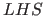
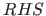
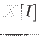
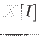

Picat allows assignments in rule bodies. An assignment takes the form =, where is either a variable or an access of a compound value in the form  [...]. When is an access in the form , the component of indexed
[...]. When is an access in the form , the component of indexed  is updated. This update is undone if execution backtracks over this assignment.
is updated. This update is undone if execution backtracks over this assignment.
Subsections
Claudio Cesar de Sa
2016-05-29